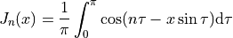

GSL Shell Examples¶
In this chapter we give some usage examples of GSL Shell.
Home-made Bessel Functions¶
The Bessel function Jn for integer values of n can be defined with the following integral:

We can use this definition to define our home-made Bessel function.
To perform the integral we need to use the num.integ() function and provide the function to integrate.
This is easy like eating a piece of cake:
use 'math'
function bessJ(x, n)
local epsabs, epsrel = 1e-8, 1e-4
local f = |t| cos(n*t - x*sin(t)) -- we define the function to integrate
return 1/pi * num.integ(f, 0, pi, epsabs, epsrel)
end
The definition of bessJ takes x and n as arguments and calculates the definite integral between 0 and π. Then we can plot the results for various values of n:
p = graph.plot('Bessel Functions Jn, n=0 ... 5')
for n=0, 5 do
p:addline(graph.fxline(|x| bessJ(x,n), 0, 20), graph.rainbow(n+1))
end
p:show()
to obtain the following result:
Then we can also calculate a matrix with the tabulated values. For example, we can use the columns of the matrix to span different values of n. We write:
m = matrix.new(200, 6, |k,n| bessJ((k-1)/10, n-1))
And we obtain the following matrix:
[ 1 0 0 0 0 0 ]
[ 0.997502 0.0499375 0.00124896 2.08203e-05 2.60286e-07 0 ]
[ 0.990025 0.0995008 0.00498335 0.00016625 4.15834e-06 8.31945e-08 ]
[ 0.977626 0.148319 0.0111659 0.000559343 2.0999e-05 6.30443e-07 ]
[ 0.960398 0.196027 0.0197347 0.00132005 6.61351e-05 2.64894e-06 ]
[ 0.93847 0.242268 0.030604 0.00256373 0.000160736 8.05363e-06 ]
[ 0.912005 0.286701 0.0436651 0.00439966 0.00033147 1.99482e-05 ]
[ 0.881201 0.328996 0.0587869 0.00692965 0.000610097 4.28824e-05 ]
[ 0.846287 0.368842 0.0758178 0.0102468 0.00103298 8.30836e-05 ]
[ 0.807524 0.40595 0.0945863 0.014434 0.00164055 0.000148658 ]
[ 0.765198 0.440051 0.114903 0.0195634 0.00247664 0.000249758 ]
[ ... ]
The Von-Koch curve¶
The Von-Koch curve is a simple and beautiful fractal curve described in 1904 by the Swedish mathematician Helge von Koch.
Here an example to plot it with GSL Shell. First we need a function to produce the curve, we are not going to explain the details but the following code can do the job:
use 'math'
function vonkoch(n)
local sx = {2, 1, -1, -2, -1, 1}
local sy = {0, 1, 1, 0, -1, -1}
local sh = {1, -2, 1}
local a, x, y = 0, 0, 0
local w = iter.ilist(|| 0, n+1)
local s = 1 / (3^n)
for k=1, 6 do
sx[k] = s * 0.5 * sx[k]
sy[k] = s * sqrt(3)/2 * sy[k]
end
local first = true
return function()
if first then first = false; return x, y end
if w[n+1] == 0 then
x, y = x + sx[a+1], y + sy[a+1]
for k=1,n+1 do
w[k] = (w[k] + 1) % 4
if w[k] ~= 0 then
a = (a + sh[w[k]]) % 6
break
end
end
return x, y
end
end
end
Then we need to produce the plot. Since we want to make something cool, we produce a closed Von Koch triangle by always using the same curve and adding it to the plot with some rotations and translations. We also produce a nice semi-transparent background to have something more beautiful. Here is the code:
p = graph.plot()
t = graph.path()
t:move_to(0,0)
t:line_to(1,0)
t:line_to(0.5,-sqrt(3)/2)
t:close()
v = graph.ipath(vonkoch(4))
c = graph.rgba(0,0,180,50)
p:add(v, c)
p:add(v, c, {}, {{'translate', x=1, y=0}, {'rotate', angle=-2*pi/3}})
p:add(v, c, {}, {{'translate', x=0.5, y=-sqrt(3)/2}, {'rotate', angle=-2*2*pi/3}})
p:add(t, c)
c = graph.rgb(0,0,180)
p:add(v, c, {{'stroke'}})
p:add(v, c, {{'stroke'}}, {{'translate', x=1, y=0}, {'rotate', angle=-2*pi/3}})
p:add(v, c, {{'stroke'}}, {{'translate', x=0.5, y=-sqrt(3)/2}, {'rotate', angle=-2*2*pi/3}})
p:show()
And this the result:
With a similar procedure, for which the code is in demos/fractals.lua, we can produce the beautiful Levy C curve:
Reading and plotting data from files¶
In this example we show how to load some data stored in a file in CSV format and use it to make a plot. The CSV is a very simple format that can be used to exchange data with spreadsheets applications. It is just plain text with several lines where each line consists of a comma-separated list of numbers or strings.
In order to load the data, you need to load the module csv and use the function read(). In this example, we will use the data stored in the file examples/data/sige-sims-prof.csv. This set of data contains just two columns, of which the first one is the x and the second column represents the y. Here is the simple code to load the data:
csv = require 'csv'
t = csv.read('examples/data/sige-sims-prof.csv')
We can then print the number of lines in the table:
>>> #t
316
If you want to plot the data in the table, there is actually no function that will do that right away, but you can do it by using a few functions:
p = graph.plot()
dget = function(i) return t[i][1], t[i][2] end
p:addline(graph.ipath(iter.sequence(dget, #t)))
p:show()
The idea is that, in order to plot the curve, we need to build the curve beforehand.
What we want is actually a line that connects the points (x[i], y[i]) where x[i] and y[i] are taken from the rows of the table t.
The last resort to obtain that would be to create a Path object and to give all the points in a procedural way like this:
-- we create a path and gives it the starting point
ln = graph.path(t[1][1], t[1][2])
for i=2, #t do
ln:line_to(t[i][1], t[i][2])
end
but it can be more handy to use the ipath() function to build the curve. This latter function builds a curve using an iterator that returns values in the form (x, y). To obtain the iterator, we use the sequence() function that lets us easily build an iterator over a sequence of integer numbers.
So to clarify the code given above, we can separate the curve and the iterator instantiations as in the following example:
p = graph.plot()
-- we define our iterator
it = iter.sequence(function(i) return t[i][1], t[i][2] end, #t)
-- we create the curve using the iterator just defined
line = graph.ipath(it)
-- then we add it to the plot, we give a title and show the result
p:addline(line)
p.title = "SiGe SIMS profile"
p:show()
and here the resulting image:
Zernike Polynomials¶
Taken from Wikipedia
In mathematics, the Zernike polynomials are a sequence of polynomials that are orthogonal on the unit disk. Named after Frits Zernike, they play an important role in beam optics.
Definitions¶
There are even and odd Zernike polynomials. The even ones are defined as
and the odd ones as
where m and n are nonnegative integers with n≥m, φ is the azimuthal angle, and ρ is the radial distance . The radial polynomials Rnm are defined as
for n − m even, and are identically 0 for n − m odd. For m = 0, the even definition is used which reduces to Rn0(ρ).
Implementation¶
The above formula can be implemented quite straightforwardly in GSL Shell with only a subtle point about the factorials in the denominator. The problem is that in some cases you can have the factorial of a negative number and if you feed a negative number to the fact() function, you will get an error.
Actually the meaning of the formula is that the factorial of a negative number if  and so, since it appears in the denominator, its contribution to the sum is null. So, in order to implement this behavior we just define an auxiliary function that returns the inverse of the factorial and zero when the argument is negative.
and so, since it appears in the denominator, its contribution to the sum is null. So, in order to implement this behavior we just define an auxiliary function that returns the inverse of the factorial and zero when the argument is negative.
So here is the code for the radial part:
use 'math'
fact = sf.fact
-- inverse factorial function definition
invf = |n| n >= 0 and 1/fact(n) or 0
-- radial part of Zernike's polynomial
function zerR(n, m, p)
local ip, im = (n+m)/2, (n-m)/2
local z = 0
for k=0, im do
local f = fact(n-k) * (invf(k) * invf(ip-k) * invf(im-k))
if f > 0 then z = z + (-1)^k * f * p^(n-2*k) end
end
return z
end
Next, we define Zernike’s function completed with the angular part:
function zernicke(n, m, p, phi, even)
local pf = even and cos(m*phi) or sin(-m*phi)
return zerR(n, m, p) * pf
end
Now we are ready to draw our function. The only missing piece is the relation between ρ, φ and the Cartesian coordinates but this is trivial:
Let us therefore define our sample function in term of x and y and use it to call the function polar_contour():
require 'contour'
N, M = 8, -2
f = |x,y| zernicke(N, M, sqrt(x^2+y^2), atan2(y,x))
p = graph.polar_contour(f, 0.9, {gridx= 81, gridy= 81, levels= 10})
p.title = string.format('Zernike polynomial (N=%i, M=%i)', N, M)
We show a few screenshots of the contour plot for various N and M.